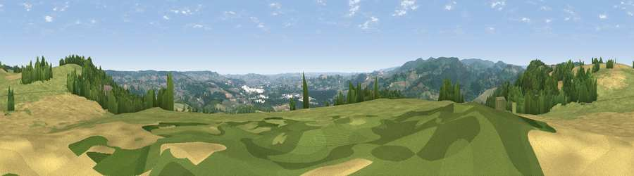

Viewpoint near Hennock
#4966 in England · top 9% of its area beats it · near HennockWhere it is
The exact computed spot (SX 82225 80075). Click the marker for map links.
The view, rendered

A 360° render of this exact spot computed from the terrain model, tree cover and land cover — summer colours, afternoon light, calibrated against photographs of famous viewpoints. Real trees, hedges and buildings will differ in detail.
The panorama
Grey silhouette: terrain skyline in each direction (720 bearings, Earth curvature and refraction included). Dashed green: skyline with trees (+15 m) and buildings (+8 m) as obstacles. Blue strip: how far the ground is visible on each bearing.
Where the view opens
Wedge length = distance to the farthest visible ground on that bearing (vegetation-aware). Rings at 10, 25 and 50 km.
What fills the view
46% grassland · 33% woodland · 18% cropland · 2% built-up
Angular shares of the visible panorama (visual magnitude), not map area. Landscape diversity 0.50 (0–1 Shannon).
Key numbers
More beautiful places nearby
The staircase of upgrades: each row has a higher view potential than everything closer. Driving times are estimates from straight-line distance, calibrated against real road routing — check an actual route before setting out.
| Place | Direction | Drive | Score |
|---|---|---|---|
| Shaptor Rock | WNW · 1 km | ~4 min | 71.0 |
| Viewpoint near Haytor Vale | WSW · 6 km | ~12 min | 80.1 |
| Viewpoint near Kenton | E · 10 km | ~20 min | 82.9 |
| Viewpoint near Holcombe | ESE · 12 km | ~23 min | 83.3 |
| Viewpoint near Shaldon | SE · 14 km | ~26 min | 83.8 |
| Viewpoint near Stokeinteignhead | SE · 15 km | ~26 min | 84.1 |
| High Peak | ENE · 29 km | ~45 min | 85.3 |
| Golden Cap | ENE · 60 km | ~82 min | 88.7 |
50.60847, -3.66582 · source: screening · position refined by local search. Computed location — check access rights before visiting.